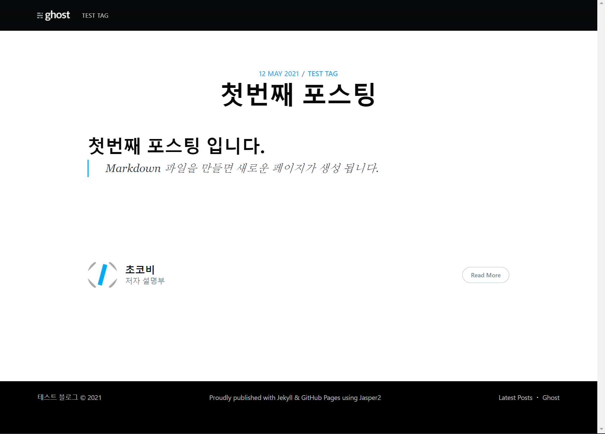

#07 게시글 작성하기
드디어 마지막 단계인 게시글 작성하기 입니다.
작성할 페이지들은 Markdown파일로 만들게 되며, Jekyll이 HTML파일로 변환시켜 주고 실제 페이지가 됩니다.
Jekyll은 _posts폴더 아래에 있는 Markdown 파일을 모두 HTML 파일로 변환시켜 줍니다.
경로: 루트/_posts
그럼 Jasper2의 샘플파일들은 모두 삭제하겠습니다.
이제 테스트용 게시글 하나를 만들어 보겠습니다.
파일 생성 시 중요한 점은 파일명을 년-월-일-파일명형식으로 만들어야 합니다.
_posts폴더 밑에 2021-05-12-first-posting.md 파일을 생성합니다.
---
layout: post
current: post
cover: # 게시글의 메인 이미지
navigation: True
title: "첫번째 포스팅" # 포스팅 제목
date: 2021-05-12 09:00:00 # 포스팅 날짜
tags: [test tag] # 해당 메뉴
class: post-template
subclass: 'post'
author: chocobe
---
## 첫번째 포스팅 입니다.
> Markdown 파일을 만들면 새로운 페이지가 생성 됩니다.
작성한 파일을 저장하고 로컬서버를 실행하면, 새로운 포스팅을 확인할 수 있습니다.

지금까지의 과정 중, 반복 작업이 될 부분은 다음과 같습니다.
- 새로운 매뉴 생성
tags.yml파일에 태그 추가navigation.html파일에 메뉴 추가
- 새로운 포스팅 생성
_posts폴더 밑에YYYY-MM-DD-파일명.md형식의 파일 생성- 글작성
이로써 Jekyll의 Jasper2 테마를 사용한 블로그 만들기를 마무리 하겠습니다.
감사합니다.
Github Page 전체 목차 입니다.
- #01 Github Page 포스팅 개요
- #02 Github Page를 위한 Jekyll 환경구축
- #03 사이트 설정 (_config.yml)
- #04 작성자(저자) 설정 (authors.yml)
- #05 태그 설정 (tags.yml)
- #06 메뉴 설정 (navigation.html)
- #07 게시글 작성하기